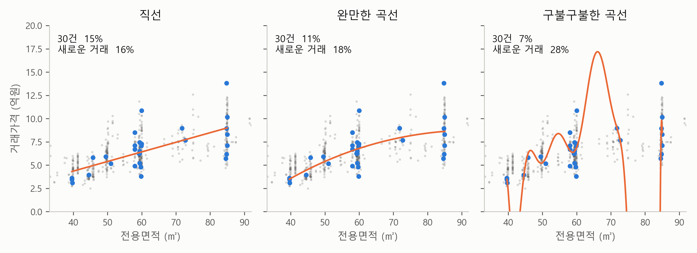
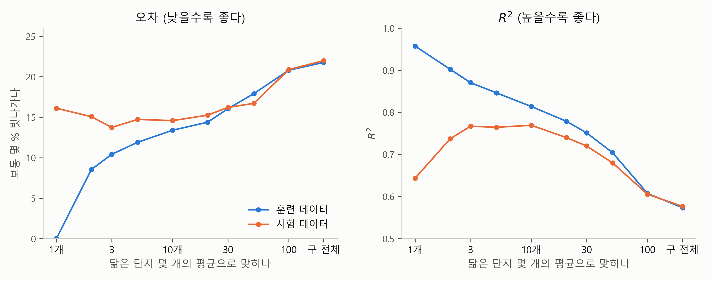
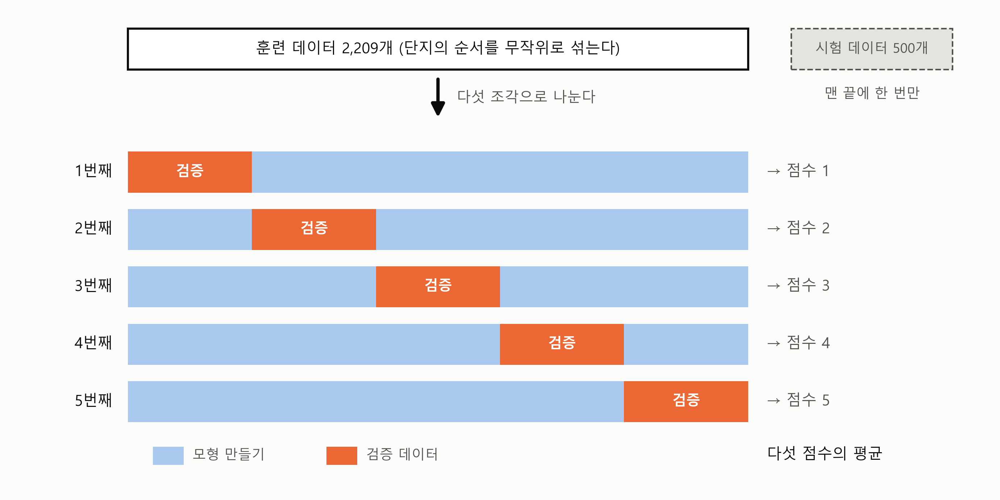

4. 알맞은 유연함 — 과적합#
보고서의 요약 셋째 줄은 이렇게 말합니다.
닮은 단지를 많이 볼수록 좋아지는 것도 아니다. 같은 구의 모든 단지를 평균하면 22% 빗나간다.
앞 절에서 닮은 단지를 1개만 보는 모형은 한 곳에 통째로 의지하는 것이 문제였습니다. 그렇다면 여러 곳을 보면 됩니다. 실제로 10개를 보면 오차가 15%로 내려갑니다. 그런데 개수를 계속 늘려 같은 구의 단지를 전부 보면, 오차가 22%로 오히려 커집니다. 이 절의 물음은 세 가지입니다. 닮은 단지를 너무 많이 보면 왜 나빠지는가. 왜 너무 적지도 너무 많지도 않은 개수에서 가장 잘 맞히는가. 이것은 닮은 단지 모형에서만 생기는 일인가.
점을 모두 지나려는 선#
아파트 단지 이야기로 들어가기 전에, 눈으로 보기 쉬운 예를 하나 봅시다. 단순회귀분석 장에서 다룬 노원구 아파트의 전용면적과 거래가격입니다. 그 장에서는 7천 건이 넘는 거래에 직선 하나를 그었습니다. 여기서는 그 가운데 30건만 뽑아, 선을 세 가지로 그어 보겠습니다. 이 30건이 훈련 데이터이고, 나머지 거래가 새 데이터입니다. 그림 4-1이 그 결과입니다. 파란 점이 30건이고, 옅은 회색 점이 나머지 거래입니다.

그림 4-1. 노원구 아파트 거래 30건(파란 점)에 그은 세 가지 선. 패널 안의 숫자는 그 선으로 가격을 예측했을 때 보통 몇 % 빗나가는지를, 30건과 새로운 거래에서 따로 계산한 것이다.
그림에서 보듯이 왼쪽 패널의 직선은 파란 점 30개의 한가운데를 지나갑니다. 점 하나하나를 지나지는 못해서, 30건에서도 보통 15% 빗나갑니다. 가운데 패널은 한 번 휘어지는 완만한 곡선입니다. 직선보다 점들에 조금 더 가까워져 11%가 됩니다. 오른쪽 패널은 마음껏 휘어질 수 있게 풀어 준 곡선입니다. 파란 점에 닿으려고 위아래로 크게 출렁입니다. 30건에서는 7%로 셋 가운데 가장 잘 맞습니다.
새로운 거래에서는 순서가 뒤집힙니다. 직선은 16%, 완만한 곡선은 18%, 구불구불한 곡선은 28%입니다. 30건을 가장 잘 따라간 선이 새로운 거래에서는 가장 크게 빗나갑니다.
구불구불한 곡선이 무엇을 했는지는 그림에 그대로 보입니다. 곡선은 전용 65㎡ 근처에서 17억원 가까이 치솟습니다. 노원구에서 65㎡ 아파트가 60㎡ 아파트의 두 배 반 가격일 리는 없습니다. 75㎡에서 84㎡ 사이에서는 곡선이 0원 아래로 내려가 그림 밖으로 사라집니다. 가격이 0원보다 낮은 아파트는 없습니다. 곡선은 면적과 가격의 관계를 배운 것이 아니라, 30건이 마침 놓인 자리를 따라간 것입니다. 그 30건이 유난히 높거나 낮았던 것은 대부분 우연입니다. 다른 30건을 뽑았다면 곡선은 전혀 다른 곳에서 출렁였을 것입니다.
이렇게 모형이 훈련 데이터를 너무 꼼꼼하게 따라가서, 훈련 데이터에서는 잘 맞는데 새 데이터에서는 잘 맞지 않게 되는 것을 과적합(overfitting)이라고 합니다. 답을 외운 학생에게 일어난 일의 이름입니다. 앞 절의 닮은 단지 1개 모형도 과적합의 예였습니다.
세 선의 차이는 얼마나 자유롭게 휘어질 수 있느냐였습니다. 이 장에서는 이것을 모형의 유연함이라고 부르겠습니다. 모형이 훈련 데이터를 얼마나 세세하게 따라갈 수 있는가 하는 정도입니다. 직선은 유연함이 가장 작고, 구불구불한 곡선은 가장 큽니다. 유연할수록 훈련 데이터에서는 잘 맞습니다. 그러나 새 데이터에서도 잘 맞는다는 보장은 없습니다.
닮은 단지를 몇 개 볼 것인가#
이제 단지로 돌아옵니다. 닮은 단지 모형에서는 닮은 단지를 몇 개 보느냐가 유연함을 정합니다. 시험 데이터의 단지 한 곳으로 먼저 감을 잡아 보죠. 앞 절의 표 3-1 마지막 행에 있던 구로구 단지입니다. 지은 지 33년, 최고층 15층이고 실제 가격은 6.15억원입니다. 표 4-1은 훈련 데이터의 구로구 단지 가운데 이 단지와 닮은 순서대로, 곧 앞 절의 식으로 계산한 거리가 짧은 순서대로 10곳을 적은 것입니다.
표 4-1. 구로구의 한 단지(33년, 15층, 실제 가격 6.15억원)와 닮은 단지 10곳
닮은 순서 |
연식 |
최고층 |
가격 |
|---|---|---|---|
1 |
33년 |
15층 |
11.75억원 |
2 |
32년 |
15층 |
6.43억원 |
3 |
32년 |
15층 |
6.00억원 |
4 |
34년 |
15층 |
7.78억원 |
5 |
32년 |
16층 |
4.54억원 |
6 |
31년 |
14층 |
7.95억원 |
7 |
32년 |
17층 |
5.73억원 |
8 |
33년 |
18층 |
5.22억원 |
9 |
30년 |
17층 |
4.70억원 |
10 |
37년 |
15층 |
7.55억원 |
표에서 보듯이 열 곳 모두 연식은 4년 안쪽, 최고층은 3층 안쪽으로 닮았습니다. 그런데 가격은 4.54억원부터 11.75억원까지 흩어져 있습니다. 같은 구에서 연식과 최고층이 닮아도 단지마다 사정이 다르기 때문입니다.
닮은 단지를 1개만 보면 첫 행의 11.75억원이 그대로 답이 됩니다. 실제 가격의 두 배에 가깝습니다. 셋째 행의 단지가 가장 닮은 단지로 뽑혔더라면 6.00억원이 답이 되어 거의 맞았을 것입니다. 어느 쪽이 뽑히느냐는 연식 1년의 차이로 갈렸습니다. 한 곳에 의지하면 답이 이렇게 우연에 흔들립니다.
10개를 보면 열 곳의 평균인 6.5억원이 답이 됩니다(로그가격의 평균을 가격으로 되돌린 값입니다). 실제보다 조금 높지만 11.75억원보다는 훨씬 가깝습니다. 유난히 높은 단지와 유난히 낮은 단지가 평균 속에서 서로를 지웠습니다.
여기서 개수를 더 늘려 가면 답은 실제 가격에서 다시 멀어집니다. 30개를 보면 6.9억원이고, 끝까지 늘려 같은 구의 모든 단지를 보면 7.6억원입니다. 훈련 데이터에 있는 구로구 단지 113곳 전부의 평균입니다. 이 113곳에는 갓 지은 단지부터 42년 된 단지까지, 3억원대부터 18억원대까지 섞여 있습니다. 이쯤 되면 “닮은 단지”라는 말이 무색합니다. 구로구의 단지라면 연식이 몇 년이든 최고층이 몇 층이든 모두 7.6억원이라는 같은 답을 받습니다. 문제를 읽지도 않고 모든 문제에 같은 번호를 찍는 학생과 같습니다.
한 단지만 보고 판단할 수는 없으니, 시험 데이터 500개 단지 전체로 채점해 봅니다. 표 4-2와 그림 4-2가 그 결과입니다.
표 4-2. 닮은 단지를 몇 개 보느냐에 따른 점수
닮은 단지 |
훈련 오차 |
시험 오차 |
훈련 \(R^2\) |
시험 \(R^2\) |
|---|---|---|---|---|
1개 |
0.0% |
16.1% |
0.96 |
0.64 |
3개 |
10.4% |
13.7% |
0.87 |
0.77 |
10개 |
13.4% |
14.6% |
0.81 |
0.77 |
30개 |
16.1% |
16.2% |
0.75 |
0.72 |
100개 |
20.8% |
20.9% |
0.61 |
0.61 |
같은 구의 모든 단지 |
21.8% |
22.0% |
0.57 |
0.58 |
주: 구의 훈련 단지가 그 수보다 적으면 그 구의 단지 전부를 본다. 훈련 단지는 구마다 19개에서 173개다.

그림 4-2. 닮은 단지를 몇 개 보느냐에 따른 점수. 왼쪽: 오차. 오른쪽: \(R^2\). 파란 선은 훈련 데이터, 주황 선은 시험 데이터로 채점한 것이다.
그림에서 보듯이 두 선은 전혀 다르게 움직입니다. 파란 선, 곧 훈련 데이터의 점수는 한 방향으로만 갑니다. 닮은 단지를 적게 볼수록 좋아지기만 해서, 1개일 때 오차 0%, \(R^2\) 0.96으로 가장 좋습니다. 주황 선, 곧 시험 데이터의 점수는 그렇지 않습니다. 오른쪽 패널에서 시험 데이터의 \(R^2\)은 1개일 때 0.64, 10개일 때 0.77, 구 전체일 때 0.58입니다. 가운데가 가장 높고 양쪽 끝이 낮습니다. 보고서의 그림 오른쪽 패널이 바로 이 선입니다. 왼쪽 패널의 오차도 같은 이야기를 합니다. 1개일 때 16.1%, 3개에서 10개 사이에서 14% 안팎, 구 전체일 때 22.0%입니다. 표에서는 3개의 오차가 13.7%로 가장 낮지만, 3개에서 10개 사이의 차이는 1%포인트 안쪽입니다. 이 정도 차이는 단지를 다르게 나누면 뒤바뀝니다.
두 선은 왼쪽에서 크게 벌어져 있고 오른쪽으로 갈수록 붙습니다. 왼쪽 끝의 벌어진 틈이 외운 몫입니다. 훈련 데이터에서만 통하고 시험 데이터에서는 통하지 않는 부분이죠. 30개를 넘어가면 두 선이 거의 겹칩니다. 외운 것은 없어졌지만, 점수 자체가 함께 나빠집니다.
너무 적게 보면, 너무 많이 보면#
양쪽 끝이 나쁜 까닭은 서로 다릅니다.
너무 적게 볼 때의 문제는 우연입니다. 한 단지의 가격에는 그 단지만의 사정이 들어 있습니다. 표 4-1의 첫 행과 셋째 행은 연식과 최고층이 거의 같은데 가격이 6억원 가까이 다릅니다. 이런 차이는 구, 연식, 최고층으로는 알 수 없으니, 모형에게는 우연과 다를 바 없습니다. 1개만 보면 그 우연이 답에 그대로 실립니다. 여러 곳을 평균하면 높은 쪽 우연과 낮은 쪽 우연이 서로 지워집니다.
너무 많이 볼 때의 문제는 닮지 않은 단지가 섞이는 것입니다. 닮은 순서대로 뽑으니, 많이 뽑을수록 덜 닮은 단지가 들어옵니다. 시험 데이터의 단지를 기준으로 보면 10번째로 닮은 단지는 보통 연식이 3년, 최고층이 2층 다릅니다. 50번째는 연식이 8년, 최고층이 6층 다르고, 100번째는 연식이 14년, 최고층이 11층 다릅니다. 지은 지 5년 된 30층 단지의 가격을 예측하면서 20년 가까이 된 19층 단지의 가격을 평균에 넣는 셈입니다. 구 전체를 평균하면 연식과 최고층이라는 정보를 아예 쓰지 않게 됩니다.
이렇게 모형이 너무 단순해서 데이터에 분명히 있는 흐름조차 담지 못하는 것을 과소적합(underfitting)이라고 합니다. 과적합의 반대쪽입니다. 과소적합인 모형은 훈련 데이터에서도 시험 데이터에서도 점수가 나쁩니다. 표의 마지막 행이 그렇습니다(21.8%와 22.0%).
정리하면 닮은 단지의 수를 줄일수록 모형은 유연해져서 훈련 데이터의 단지 하나하나를 세세하게 따라가고, 늘릴수록 뭉뚱그립니다. 한쪽 끝에는 과적합이, 다른 쪽 끝에는 과소적합이 있습니다. 시험 데이터에서 가장 잘 맞히는 자리는 그 사이에 있고, 이 데이터에서는 3개에서 10개 사이입니다.
유연함의 다이얼#
닮은 단지를 몇 개 볼지는 데이터가 정해 주지 않습니다. 모형을 만드는 사람이 정합니다. 라디오의 음량을 정할 때 다이얼을 돌리듯 사람이 정하는 값이어서, 이 장에서는 이런 값을 다이얼이라고 부르겠습니다. 교과서 이름은 하이퍼파라미터(hyperparameter)입니다. 회귀식의 계수처럼 데이터가 정해 주는 값을 파라미터라고 부르는데, 그것과 구별해 붙인 이름입니다. 닮은 단지 모형의 다이얼은 닮은 단지의 수이고, 그림 4-1의 선에서는 얼마나 자유롭게 휘어질 수 있게 하느냐가 다이얼이었습니다. 그리고 다이얼을 어디에 놓을지, 예를 들어 닮은 단지를 5개 볼지 10개 볼지 정하는 것은 다이얼 눈금을 정한다고 말하겠습니다.
머신러닝의 모형에는 대부분 이런 다이얼이 있습니다. 이름과 모양은 모형마다 다르지만 하는 일은 같습니다. 한쪽으로 돌리면 모형이 유연해져서 훈련 데이터를 세세하게 따라가고, 반대쪽으로 돌리면 단순해집니다. 그리고 어느 모형에서나 같은 일이 벌어집니다. 훈련 데이터의 점수는 유연할수록 좋아지기만 하고, 시험 데이터의 점수는 어느 지점까지 좋아지다가 다시 나빠집니다. 그림 4-2는 닮은 단지 모형의 그림이지만, 다른 모형들도 다이얼을 돌리면 대개 이와 닮은 모양의 그림이 나옵니다.
그래서 AI가 만든 모형을 볼 때 확인할 것이 하나 더 생깁니다. 앞 절에서는 점수가 시험 데이터로 매긴 것인지를 보라고 했습니다. 여기에 더해 훈련 데이터의 점수와 시험 데이터의 점수를 비교합니다. 훈련 데이터의 점수가 시험 데이터의 점수보다 훨씬 좋다면 과적합을 의심합니다. 두 점수가 비슷한데 둘 다 나쁘다면 과소적합을 의심합니다. 보고서의 표가 훈련 오차와 시험 오차를 나란히 실은 까닭이 이것입니다.
회귀식은 어디쯤 있나#
회귀식에는 닮은 단지의 수 같은 다이얼이 없습니다. 그래도 같은 눈으로 볼 수 있습니다. 회귀식은 훈련 오차와 시험 오차가 모두 15.8%로 거의 같습니다. 외운 몫이 없다는 뜻이고, 앞 절에서 본 대로 계수 28개로는 외울 수가 없기 때문입니다. 시험 데이터의 \(R^2\)은 0.75로, 닮은 단지 10개 모형의 0.77과 비슷하고 구 전체의 0.58보다는 훨씬 높습니다. 회귀식은 과적합도 과소적합도 아닌, 꽤 알맞은 자리에 있습니다.
회귀식이 늘 그런 것은 아닙니다. 변수를 수백 개 넣으면 회귀식도 훈련 데이터를 세세하게 따라갈 수 있게 되어 과적합이 생깁니다. 그림 4-1의 구불구불한 곡선이 사실은 면적의 거듭제곱을 여러 개 넣은 회귀식입니다. 반대로 변수를 하나도 넣지 않으면 모든 단지에 전체 평균 가격 하나를 답하는 모형이 됩니다. 회귀식에서는 변수를 몇 개 넣느냐가 다이얼 노릇을 합니다.
몇 개를 볼지는 어떻게 골랐나#
한 가지가 남았습니다. 이 절에서는 시험 데이터의 점수를 본 다음, “3개에서 10개 사이가 가장 좋다”고 말했습니다. 하지만 앞 절에서 정한 규칙이 하나 있었습니다. “시험 데이터는 모형을 만드는 동안 한 번도 보지 않는다.” 그런데 생각해 보면, 닮은 단지를 몇 개 볼지 정하는 일도 모형을 만드는 일에 들어갑니다. 여러 후보 가운데 시험 데이터에서 가장 좋았던 것을 고르면, 그 시험 데이터에 우연히 가장 잘 들어맞은 것을 고르게 되고, 점수도 처음 보는 단지에서보다 좋게 나옵니다.
그렇다면 시험 데이터를 보지 않고 몇 개가 좋은지 어떻게 알 수 있을까요? 시험 데이터 노릇을 할 데이터를 훈련 데이터 안에서 따로 떼어 내면 됩니다. 훈련 데이터의 단지를 무작위로 섞어 다섯 조각으로 나누고, 한 조각을 떼어 둔 채 나머지 네 조각으로 모형을 만들어 떼어 둔 조각의 가격을 맞혀 봅니다. 떼어 두는 조각을 돌아가며 바꿔 다섯 번 하고, 다섯 점수의 평균을 봅니다. 이 방법을 교차검증(cross-validation)이라고 하고, 그때마다 떼어 두는 조각을 검증 데이터(validation data)라고 합니다. 본시험 전에 모의고사를 여러 번 보고 공부법을 고르는 것과 같습니다. 그림 4-3은 이 과정을 그린 것입니다.

그림 4-3. 다섯 조각 교차검증. 훈련 데이터를 다섯 조각으로 나누고, 한 조각씩 돌아가며 검증 데이터로 쓴다.
그림에서 보듯이 검증 조각이 1번째부터 5번째까지 한 칸씩 옮겨 가며 점수가 하나씩 나옵니다. 이 다섯 점수의 평균이 교차검증의 점수입니다. 모든 단지가 한 번씩 검증 데이터가 되므로, 훈련 데이터 2,209개 전부로 채점한 셈이 됩니다. 시험 데이터 500개는 이 과정에 한 번도 들어오지 않습니다.
조각을 몇 개로 나눌지는 또 정해야 할 문제로 남습니다. 조각이 많을수록 모형을 만드는 데이터가 커지지만, 그만큼 모형을 여러 번 만들어야 합니다. 흔히 다섯 조각이나 열 조각으로 나눕니다. 조각을 \(k\)개로 나누는 교차검증을 통틀어 \(k\)겹 교차검증(\(k\)-fold cross-validation)이라고 부르고, 이 절의 것은 5겹 교차검증입니다. 여기의 \(k\)는 조각의 수이고, 닮은 단지의 개수 \(k\)와는 다른 수입니다.
닮은 단지를 1개 볼 때, 3개 볼 때, 10개 볼 때처럼 후보마다 이렇게 교차검증의 점수를 구하고, 그 점수가 좋은 개수를 고릅니다. 보고서도 이렇게 살폈고, 5개와 10개의 점수가 거의 같아 10개를 썼습니다.
정리하면 데이터는 세 가지 일에 쓰입니다. 모형을 만드는 데는 훈련 데이터, 몇 개를 볼지 고르는 데는 검증 데이터, 마지막 점수를 매기는 데는 시험 데이터입니다. 보고서는 10개로 정한 뒤 훈련 데이터 전부로 모형을 만들고, 그때 처음으로 시험 데이터를 꺼내 한 번 채점했습니다. 그 점수가 14.6%입니다.
요약 — 이 절의 물음과 답
닮은 단지를 너무 많이 보면 왜 나빠지는가? 닮은 순서대로 뽑으므로 많이 뽑을수록 덜 닮은 단지가 섞인다. 같은 구의 모든 단지를 평균하면 연식과 최고층을 아예 쓰지 않는 셈이 된다. 모형이 너무 단순해서 데이터에 있는 흐름을 담지 못하는 것을 과소적합이라고 한다.
왜 너무 적지도 너무 많지도 않은 개수에서 가장 잘 맞히는가? 닮은 단지를 적게 볼수록 모형은 유연해져서 훈련 데이터를 세세하게 따라간다. 너무 유연하면 훈련 데이터를 너무 꼼꼼히 따라가 새 데이터에서 빗나가는데, 이것이 과적합이다. 시험 데이터의 \(R^2\)은 1개 0.64, 10개 0.77, 구 전체 0.58로 과적합과 과소적합 사이에서 가장 높다.
닮은 단지 모형에서만 생기는 일인가? 아니다. 거래 30건에 구불구불한 곡선을 그어도 같은 일이 생긴다(30건 7%, 새로운 거래 28%). 모형에는 대부분 유연함을 정하는 다이얼이 있고, 훈련 데이터의 점수는 유연할수록 좋아지기만 하지만 시험 데이터의 점수는 가운데에서 가장 좋다.
몇 개를 볼지는 시험 데이터를 보지 않고 어떻게 고르는가? 훈련 데이터를 다섯 조각으로 나누고, 한 조각씩 돌아가며 검증 데이터로 떼어 두고 채점해 평균을 본다. 이것이 교차검증이다. 후보마다 이 점수를 구해 좋은 개수를 고른다. 보고서는 5개와 10개의 점수가 거의 같아 10개를 썼다.